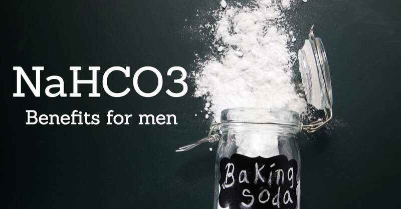
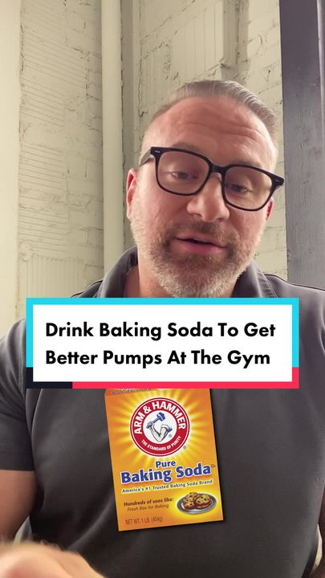
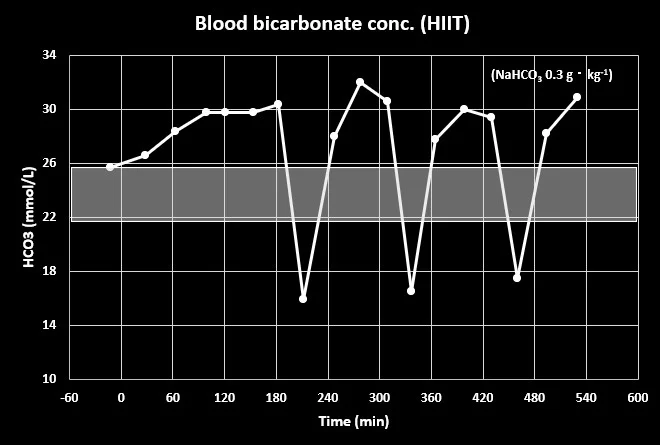
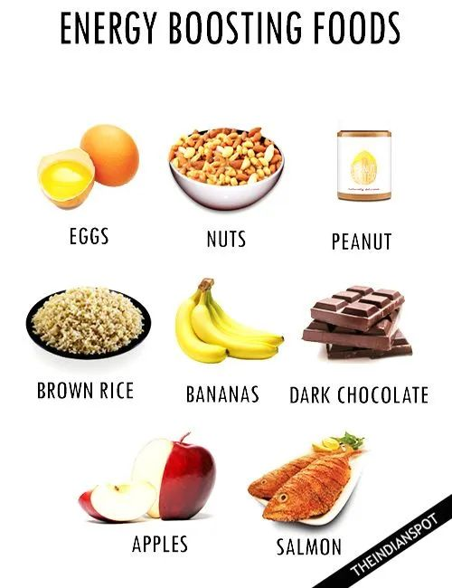

国外的肌肉猛男们又开始搞事情了！他们增强力量的最新的”黑科技”是什么呢？居然是吃小苏打！就是那个用来烘焙和清洁的白色粉末·······这些健身狂魔们怎么突然对厨房调料产生了兴趣？
有的人信誓旦旦地宣称，吃了小苏打后，他们能不间断地跑上几个小时；还有人夸张地表示，举重的重量”戏剧性地”增加了。
社交媒体上，这股”小苏打热”已然风起云涌，还没试过的健人们只能说有难了。
Reddit上有位仁兄分享了他的”神奇配方”：睡前一茶匙小苏打配苏打水，早上再来半茶匙小苏打配西柚汁。他说：”这感觉就像嗑了兴奋剂一样！我连续做了一小时的山地冲刺，一点都不累。腿部肌肉简直像是装了永动机！”嗯？连躺平的小编都心动了，感觉可以再抢救一下。
一位名叫Marek的网红更是信心满满地告诉他的近50万粉丝，只要吃一勺小苏打，就能”显著提升”你的训练效果。另一位自称”Professor Ill Will”的网红更是生猛，直接往嘴里倒小苏打，连水都不喝，还煞有介事地说这能让你的训练”上升到新的高度”。
兄弟，你这是要上天吗？
他还振振有词地说：”你会兴奋到不知所措！”这样真的没问题吗？会不会”兴奋”到冲向厕所，不知所措啊······
专家们可不这么看,他们无奈地表示，这种”神奇”的做法可能会引发严重的腹泻。

Chester的体育营养师Danny Webber警告说：”这可能导致恶心和腹泻—— 相信我，你绝对不希望在跑步或健身时遇到这种情况。”假如你正在健身房挥汗如雨，突然肚子一阵翻江倒海…恐怕只能在健身房洗个澡了。
有趣的是，一位不愿透露姓名的专家忍不住亲身尝试了这个”神奇”的方法。结果呢？他骑着自行车，差点没能及时赶回家上厕所！
他讲述了自己的经历：”我吃了大剂量的小苏打就去骑车，结果刚刚来得及回到家就冲向了厕所。”有些网红的建议，真的要谨慎对待啊！
虽然有研究表明，小苏打确实可能对短时间的高强度运动有一定帮助。国际运动营养学会（ISSN）在2021年的一项研究中指出，小苏打对拳击、武术、自行车、赛艇和短跑等短时间运动项目可能有增强效果。

他们建议，每公斤体重摄入0.3克小苏打可能会有效果。这意味着一个80公斤的男性需要摄入24克小苏打，大约是一个半汤匙。
但是，这种效果最多持续不到十分钟·······为了这短暂的”神力”，值得冒着随时可能”喷射”的风险吗？
专家解释说，小苏打之所以可能有这种效果，是因为它可以限制肌肉疲劳。Danny Webber解释道：”当运动员锻炼时，会在肌肉中积累乳酸 —— 这就是肌肉疲劳时产生灼烧感的原因。由于小苏打是碱性的，所以有证据表明它可以中和这种酸性。”

喷射倒还是其次，更重要的是，过量摄入小苏打可能会引发心律不齐等心脏问题。因为过多的钠可能对身体产生伤害。专家们苦口婆心地劝告：除非你是顶级运动员，否则还是别碰这玩意儿为好。”我不建议非顶级运动员使用这种方法，”一位专家说，”对某些人来说，这绝对是有风险的，因为每个人对碳酸氢钠的反应可能不同。”

各位大肌霸们，小苏打还是乖乖留在厨房和浴室吧。它可以用来烘焙美味的蛋糕，也可以用来清洁顽固的污渍，甚至可以用来缓解胃酸过多和蚊虫叮咬的瘙痒。但是，千万别把它当成”超级能量饮料”。
想要增强能量，不如来点科学的补剂，或者干脆多吃几个鸡蛋。让我们一起对这种危险的网红潮流说不，用理智和汗水来塑造我们的身体吧！